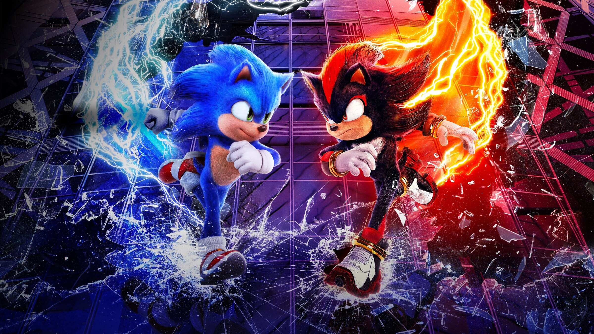
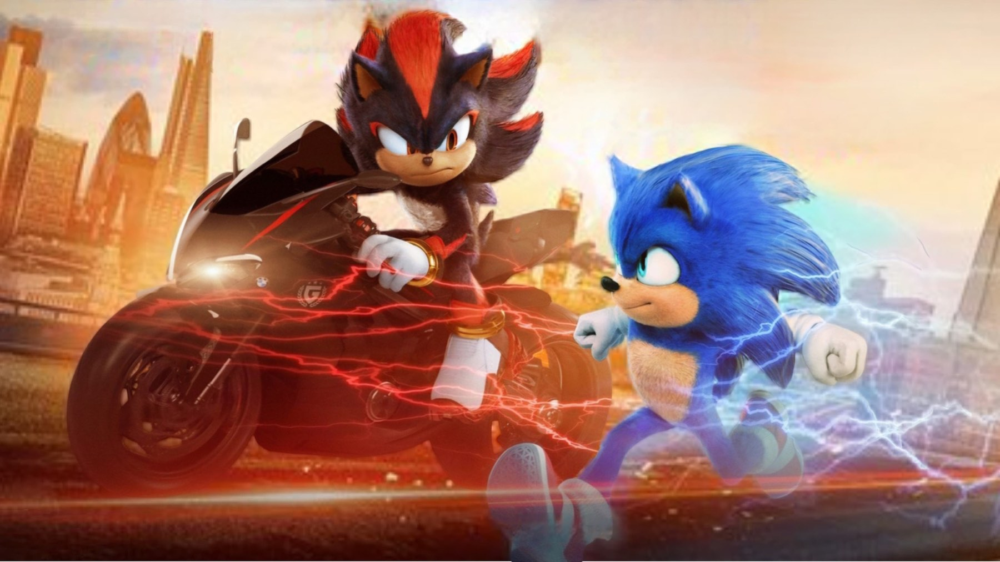
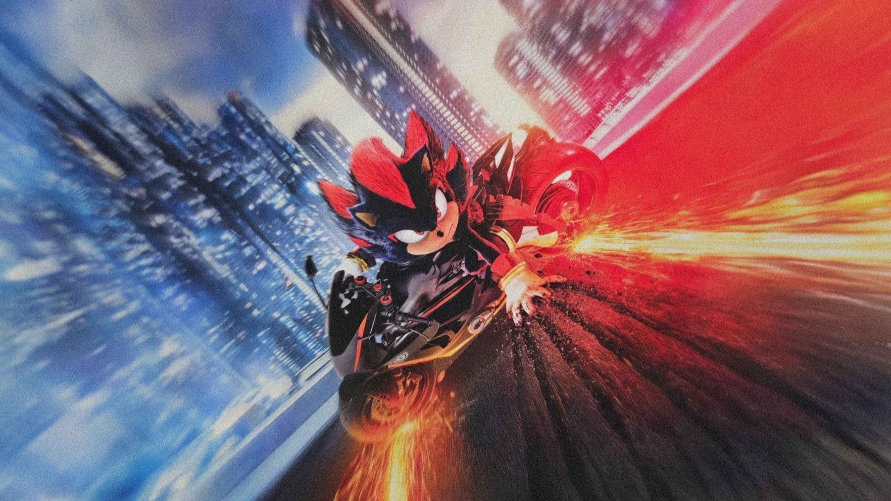

Sonic 3: il film con Keanu Reeves, la recensione
Il terzo capitolo punta sui cattivi: Shadow con la voce di Keanu Reeves e un Jim Carrey che danza con sé stesso. Funziona dove ci sono loro, meno dove tornano i buoni
Il momento migliore di Sonic 3 non ha Sonic in scena. Ivo Robotnik e suo nonno Gerald, interpretati entrambi da Jim Carrey, devono attraversare un'area riservata difesa da una griglia di laser. Il primo si accorge che le tute speciali indossate dai due sono immuni ai raggi, quindi trasforma il passaggio in un numero di danza sulle note di «Galvanize» dei Chemical Brothers. La scena fa ridere, ma dice anche che cos'è questo terzo capitolo: un film che ha capito di dover puntare sui cattivi, e che convince meno quando torna a occuparsi dei buoni.
Per noi il film di Jeff Fowler è interessante perché chiede a una saga nata per le battute di reggere un passato che non si risolve con una gag. Shadow e i due Robotnik hanno un conto aperto con la propria storia, perciò il film regge finché Carrey e Keanu Reeves ne occupano i due poli. Il difetto sta dall'altra parte, perché la famiglia umana di Sonic qui fa da contorno.
Di cosa parla Sonic 3?
Il prologo è ambientato nel 1974: un meteorite con dentro l'alieno Shadow cade in Oklahoma e finisce in un centro di ricerca della G.U.N., l'organizzazione militare del film, dove il professor Gerald Robotnik studia i suoi poteri insieme alla nipote Maria. Nel 2024 un hacker apre la cella di Shadow in una prigione G.U.N. al largo del Giappone, e lui esce con un solo desiderio, la vendetta. Il trio di Sonic viene reclutato per fermarlo a Tokyo, ma la caccia porta presto a un'alleanza instabile con il dottor Ivo Robotnik. Non sveliamo altro.

Perché il corridoio dei laser dà il tono a tutto il film
Si vedono due Robotnik che attraversano una griglia di laser ballando insieme, tra smorfie ed espressioni esagerate da comicità fisica anni Novanta: è Ivo a scoprire che le tute li proteggono e a decidere di farne un numero, con il nonno accanto. Il gesto è comico, ma racconta il loro rapporto meglio di un dialogo, perché i due sono la stessa mania di grandezza a distanza di una generazione. La danza non è nata in produzione: Slashfilm riporta che Fowler la indica come una richiesta di Carrey fin dalle prime conversazioni, brano compreso. Il rimando è al primo film, dove Robotnik balla da solo nel suo laboratorio sulle note di «Where Evil Grows» dei Poppy Family finché Stone lo interrompe. Allora il cattivo danzava per sé, mentre adesso lo fa insieme alla sua famiglia.
Sul set i laser erano veri. Il direttore della fotografia Brandon Trost racconta all'American Cinematographer che li ha progettati Adam LaBay di Precision Lasers e che gli interpreti indossavano tute pensate per riflettere i raggi lontano dal corpo. Alcuni fasci hanno poi disturbato gli effetti digitali, quindi sono stati tolti in postproduzione. Nei campi larghi, spiega Trost, non è Carrey ma un ballerino; nei primi piani di solito sì, e per questo è la sequenza con più volti sostituiti dell'intero film. Lo conferma Fowler, nelle parole che riporta Slashfilm: serve sempre un altro essere umano a ballare con l'attore, e il suo volto viene sostituito dopo. Cambia il modo di guardarla: nei campi larghi i due Robotnik sono un lavoro di coreografia e di computer, nei primi piani torna la faccia di Carrey, ed è lì che le smorfie funzionano.

Due Carrey, tre ore di trucco e un solo doppiatore
Il trucco di Gerald richiedeva dalle tre alle quattro ore, perciò i due lati di una scena non si giravano nello stesso giorno: Carrey faceva un personaggio il lunedì e l'altro il mercoledì. In mezzo c'era Brendan Murphy, il suo sostituto, presente a ogni prova per imparare dall'interno la recitazione dell'attore. Trost ricorda di aver provato per un giorno il motion control sull'inquadratura dell'incontro tra Ivo e Gerald, quella in cui le dita si sfiorano e Ivo accarezza la testa del nonno, ma di averlo abbandonato: l'inquadratura è stata girata normalmente per due volte e il computer ha incollato il resto.
È la stessa idea del corridoio: spendere un giorno di lavoro per un gesto tenero e non per una gag dice che il film tratta lo sdoppiamento di Carrey come una scena di personaggio e non come un effetto da vetrina. In italiano i due ruoli passano per un solo doppiatore: Roberto Pedicini dà la voce sia a Ivo sia a Gerald, con la direzione di Daniele Giuliani e i dialoghi di Cecilia Gonnelli. Per chi sceglie la versione doppiata, la differenza tra i due Robotnik dipende quindi tutta da lui.
Shadow, un riff di chitarra e Keanu Reeves
Reeves non è stato un ripiego: il cosceneggiatore Josh Miller dice che era la voce immaginata già mentre scrivevano, e Fowler ricorda che in studio registrava più letture della stessa battuta. In italiano Shadow è doppiato da Claudio Moneta, Sonic da Renato Novara.
La scelta più intelligente su Shadow, però, è musicale. «Live & Learn» dei Crush 40, il tema del personaggio nei videogiochi, compare per la prima volta nella scena iniziale come un riff di chitarra suonato da Maria, e torna in versione cantata, rimixata da Tom Holkenborg, nel duello con Sonic. È una soluzione da cinema e non da videogioco: la canzone si lega prima a una persona e a un gesto, poi diventa esplosione, quindi anche lo spettatore che non ha mai giocato sente che quel motivo ha una storia.
Dove il film si perde
Federico Vascotto, su Movieplayer, dà 3 su 5 e rimprovera al film citazioni troppe e idee poche, con gli umani messi «un po' in un angolo». Sul primo punto, uno scontro di Sonic e Shadow coreografato come quello tra Neo e l'agente Smith in Matrix è una citazione dichiarata: si riconosce, si sorride, ma intanto il duello più atteso racconta un altro film. Lo stesso vale per il meme di TikTok su Shadow, che Fowler spiega come un omaggio ai fan: va bene finché non prende il posto di una scena, perché a quel punto il film parla alla platea e non ai personaggi.
Sul tema della famiglia l'ambizione è giusta, perché mette a confronto quella di Tom e Maddie con Sonic e quella dei Robotnik, un nonno e un nipote che si ritrovano. Però la prima è la più sacrificata: viene affidata a una missione per rubare una keycard nel quartier generale della G.U.N. Marsden e Sumpter sono bravi e simpatici, ma lì il film ha già detto ciò che gli interessa sul resto e li fa entrare in una trama che appartiene ad altri.
I numeri e l'accoglienza
In Italia è uscito il 1° gennaio 2025 con Eagle Pictures: le anteprime del 31 dicembre hanno incassato 1.229.151 euro e il totale ha raggiunto 8.900.899 euro, più dei primi due capitoli. Nel mondo a novembre 2026 il totale è di 492,2 milioni di dollari, di cui 236,1 negli Stati Uniti e in Canada, contro un budget dichiarato di 122 milioni. Su Rotten Tomatoes il film ha l'85% di recensioni positive, mentre su Metacritic ha 56 su 100, punteggio da recensioni miste. Carrey ha vinto il premio per il miglior cattivo ai Kids' Choice Awards del 21 giugno 2025.
Dove vederlo e a chi lo consigliamo
A ottobre 2026 Sonic 3 è disponibile in streaming su Netflix e Paramount+ tramite Amazon Channel, oltre che a noleggio nei principali negozi digitali. Lo consigliamo a chi ha visto i primi due capitoli e vuole un tono meno scherzoso, perché qui i cattivi pesano; lo consigliamo anche ai fan dei videogiochi, che riconoscono «Live & Learn» al primo accordo. Per i più piccoli: negli Stati Uniti il film è PG e Miller racconta che gli sceneggiatori si chiedevano quanto potesse diventare scuro restando in quella classificazione, quindi la vendetta di Shadow è il tema più scuro da tenere d'occhio con i bambini piccoli. Chi non ha visto i primi due capitoli segue comunque la storia, ma perde le strizzate d'occhio; chi non ama i film pieni di rimandi ai videogiochi si annoierà prima.
Sonic 3 funziona quando ballano i cattivi e si inceppa quando tocca ai buoni, e nel corridoio dei laser c'è tutto il film.
Domande frequenti
Quando è uscito Sonic 3 in Italia?
Il 1° gennaio 2025, distribuito da Eagle Pictures.
Chi dà la voce a Shadow?
Nella versione originale Keanu Reeves; in quella italiana Claudio Moneta.
Chi doppia i due Robotnik in italiano?
Roberto Pedicini doppia sia Ivo sia Gerald Robotnik, interpretati entrambi da Jim Carrey.
Dove si vede Sonic 3 in streaming?
A ottobre 2026 su Netflix e Paramount+ tramite Amazon Channel.
Fonti consultate (7)
- Wikipedia – Sonic the Hedgehog 3 (film)
- Wikipedia – Sonic 3 - Il film (edizione italiana)
- American Cinematographer – Double Trouble for Sonic the Hedgehog 3 (Brandon Trost)
- Slashfilm – One of the best Sonic 3 scenes was a silly Jim Carrey idea
- Movieplayer – Sonic 3, recensione (Federico Vascotto)
- Box Office Mojo – Sonic the Hedgehog 3
- TMDB – scheda e dove vederlo in Italia